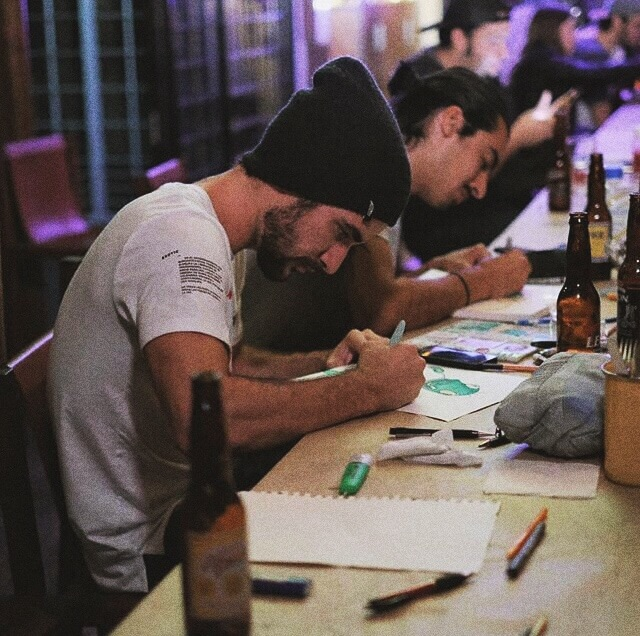
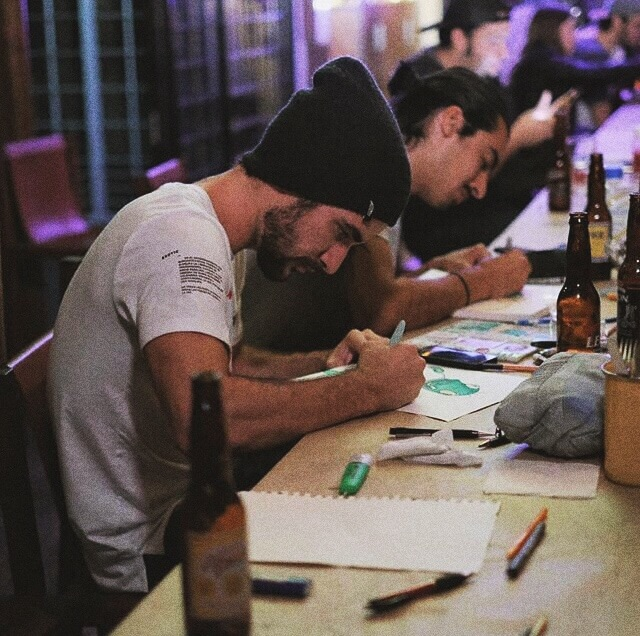

Tech savvy, the computer is an extension of my body. I’m always interested on experimenting and being creative with different means.
Born in Mexico, moved to Italy one year and half ago . I’ve been working as a freelancer and studying a masters on interaction design in Politecnnico di Milano ever since.
I keep myself sane through creative outputs and balancing on heights with a tightrope ( highline ).
Check my CV here.

 
